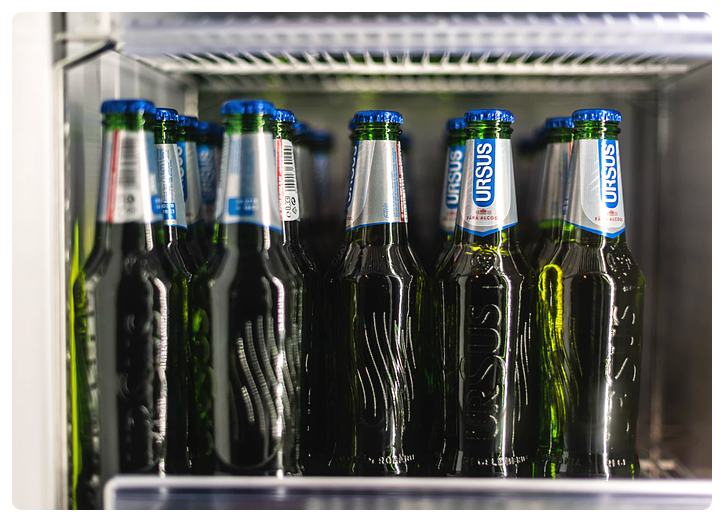

과일진열쇼케이스
과일쇼케이스 AS, 고장인지 관리 문제인지부터 가려 보세요

과일쇼케이스에서 과일이 빨리 무르거나 쭈글해지는 문제는 부품 고장보다 습도와 냉기 흐름, 진열 방식에서 오는 경우가 많습니다. 온도가 아예 내려가지 않거나 소음·누수가 생기면 AS 접수가 필요하고, 같은 고장이 반복되거나 매장 품목이 바뀌었다면 교체도 함께 따져 보시는 편이 좋습니다.
안녕하세요. 과일가게와 생과일 음료 매장에 맞춘 진열 냉장고를 만들어 온 한성쇼케이스입니다.
과일가게 사장님들이 AS 문의를 주실 때 가장 많이 하시는 말씀은 "냉장고가 이상한지 과일이 금방 물러요"입니다.
그런데 막상 점검해 보면 기계는 멀쩡하고 다른 데 원인이 있는 경우가 적지 않습니다.
과일은 따고 난 뒤에도 숨을 쉬며 수분을 내보내는 상품이라, 냉장 온도만큼이나 쇼케이스 안 공기의 습한 정도에 민감합니다.
그래서 과일쇼케이스는 고장과 관리 문제를 먼저 구분하는 게 시간과 비용을 아끼는 길입니다.
오늘은 증상별로 직접 볼 것, AS를 불러야 하는 경우, 그리고 오래 쓴 제품을 고칠지 바꿀지 판단하는 기준을 정리해 보겠습니다.
1. 무름과 쭈글함은 습도부터 의심
쇼케이스 안이 너무 습하면 과일 표면에 물방울이 맺히고, 그 자리부터 조직이 약해져 무르기 시작합니다.
반대로 너무 건조하면 수분이 빠져 껍질이 쭈글해지고 윤기가 사라집니다. 둘 다 손님 눈에는 오래된 과일로 보이죠.
냉기가 나오는 토출구 바로 앞에 잎채소나 베리류를 두면 한쪽만 마르기 쉽고, 세척한 과일을 물기 그대로 쌓으면 바닥 쪽이 먼저 상합니다.
이런 증상은 부품 수리로 해결되지 않으니 진열 위치와 물기 관리부터 바꿔 보세요.
- 토출구 바로 앞에 마르기 쉬운 품목이 있는지
- 세척 후 물기를 빼고 진열하는지
- 유리 안쪽에 물방울이 계속 맺히는지
2. AS 접수가 필요한 증상
설정 온도까지 내려가지 않거나 한참 걸리는 경우, 팬이나 콤프레셔에서 평소와 다른 소리가 나는 경우, 바닥으로 물이 새는 경우는 기계 점검이 필요합니다.
과일쇼케이스는 바닥 배수구에 과일 꼭지나 잎 부스러기가 끼어 물이 넘치는 일이 잦습니다. 배수구를 청소해도 물이 계속 고이면 배수 라인이나 증발 장치 쪽 문제일 수 있으니 접수해 주세요.
접수 때 명판 사진과 증상이 시작된 시점을 함께 알려 주시면 방문이 빨라집니다.
- 설정 온도 미달 또는 냉각 지연
- 팬·콤프레셔 이상 소음
- 배수구 청소 후에도 계속되는 누수


3. 고쳐 쓰는 게 나은 경우
조명이 나갔거나, 팬 하나가 멈췄거나, 문 패킹이 닳은 정도라면 부품만 바꿔 계속 쓰셔도 됩니다. 과일쇼케이스는 진열 각도와 선반 단차가 매장 판매 방식에 맞춰져 있는 경우가 많아, 몸체 상태가 괜찮다면 익숙한 구성을 유지하는 편이 이득입니다.
조명 색이 바래 과일 색이 칙칙해 보인다면 조명만 교체해도 진열 인상이 크게 달라집니다.
4. 바꾸는 걸 고민해야 하는 경우
같은 증상으로 여러 번 수리를 받았다면 콤프레셔나 냉각 계통 자체가 지쳤을 가능성이 큽니다. 여름마다 냉기가 약해져 과일을 다른 냉장고로 옮기는 일이 반복된다면 수리비와 폐기 손실을 합쳐 교체와 비교해 보세요.
매장 품목이 바뀐 경우도 있습니다. 통과일 위주로 팔다가 컵과일이나 생과일 주스 비중이 커졌다면, 낮고 넓은 평대보다 칸이 나뉜 다단형이 맞을 수 있습니다.
이럴 땐 지금 매장 폭과 판매 구성에 맞춰 새로 설계하는 편이 오래 갑니다.
체크리스트
- 과일 상태 변화가 습도 문제인지 확인
- 토출구 앞 진열 품목 정리
- 배수구 부스러기 청소
- 명판 사진과 증상 시작 시점 메모
- 반복 고장 여부와 품목 변화
현장에서 자주 보는 경우: 매장과 따로 노는 기성 과일냉장고
과일가게나 생과일 음료 카페를 여는 분들이 가장 오래 고민하시는 장비가 과일냉장고입니다. 매장 크기와 인테리어, 주력 상품이 다 다른데 기성 제품은 모양과 크기가 정해져 있어, 결국 자리에 억지로 끼워 넣고 쓰다가 관리가 어려워지는 경우를 자주 봅니다.
한성쇼케이스는 과일냉장고와 쇼케이스를 직접 만들고 납품까지 맡아 납기를 맞추고, 진열용과 보관용 냉장고를 함께 제작해 발품을 덜어 드립니다.
전자제품인 만큼 고장이 날 수 있다는 전제로 사후 A/S를 중요하게 챙기며, 상담 단계부터 A/S까지 한 곳에서 안내해 드립니다.



자주 묻는 질문
과일이 빨리 무르는데 온도를 더 낮추면 될까요?
온도를 무작정 낮추면 품목에 따라 냉해를 입거나 오히려 표면에 물이 맺힐 수 있습니다. 적정 조건은 과일 종류에 따라 다르니 진열 위치와 습도부터 점검해 보시길 권합니다.
AS 기사님이 오기 전까지 과일은 어떻게 하나요?
냉기가 약하다면 무르기 쉬운 품목부터 다른 냉장고로 옮기고, 문을 여닫는 횟수를 줄여 주세요. 사과나 배처럼 단단한 품목은 상대적으로 버티는 편입니다.
지방 매장도 AS를 받을 수 있나요?
한성쇼케이스는 전국 240여 개 A/S 센터를 운영하고 있어 지방에서도 가까운 곳으로 접수하실 수 있습니다.
대표전화 031-986-2458로 문의해 주세요.
매장 조건에 맞춰 만드는 한성쇼케이스
원하시는 제품 사진과 설치할 공간 사진만 보내 주셔도 매장에 맞는 구성을 추천해 드립니다.
- 전국 240여 개 A/S 전담 센터 운영
- 본사 대량 자재 매입으로 품질 대비 합리적인 가격
- 유럽제·삼성 냉각 콤프레셔 적용
- 국내 최초 쇼케이스 전문 디자이너 상주
매장 폭과 원하는 진열 구성을 알려 주세요. 실측과 견적을 안내해 드립니다.
031-986-2458